다섯 플러그인과 시험 방법
발표자는 인기 Claude Code 플러그인 다섯 개를 플러그인 없는 기본 Claude Code와 같은 과제로 맞붙였어요. 결과는 0 대 5였어요. 다섯 개 모두 비용이 더 들었거나, 더 느렸거나, 둘 다였어요. 아래 화면은 그중 가장 큰 차이예요. 위쪽 짧은 회색 막대가 기본 Claude Code의 $0.91, 아래 긴 주황 막대가 플러그인을 붙인 쪽의 $5.12예요. 그 밑의 'same output' 표시처럼 결과물은 같았어요.

다섯 플러그인은 각자 하는 일이 달라요
오른쪽 회색 글씨가 각 플러그인의 역할이에요. Superpowers와 ECC는 일하는 방식 전체를 바꾸는 워크플로 키트, Graphify는 코드베이스 지도, Caveman은 토큰 절약, claude-mem은 메모리예요. 이름 옆 'more like it' 표시와 맨 아래 줄은 같은 패턴이 요즘 나오는 다른 스킬에도 있다는 뜻이에요. 발표자는 이 다섯 개만의 문제가 아니라고 강조해요.
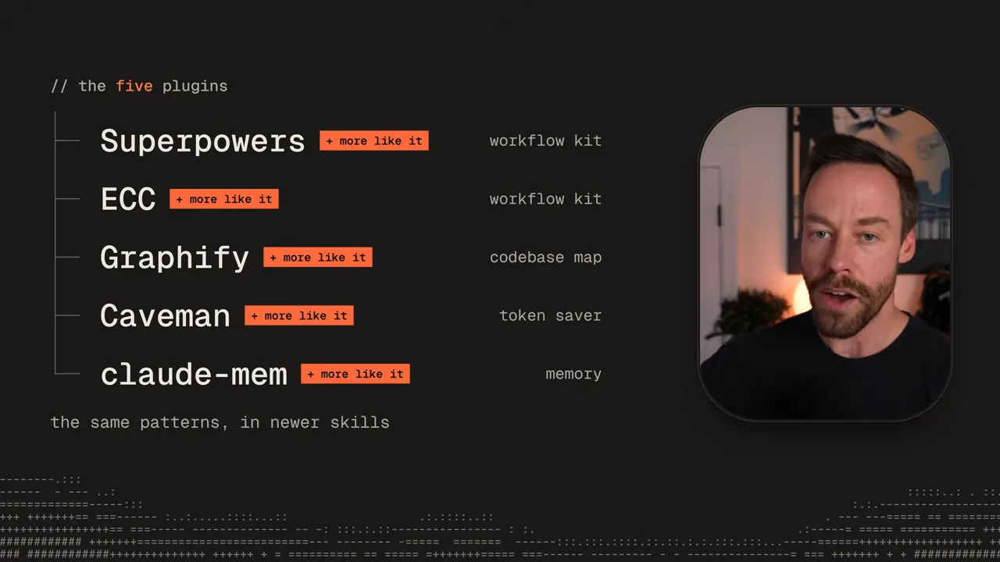
다섯 개를 고른 이유는 인기예요. 아래 순위표에서 주황 막대가 다섯 플러그인, 회색이 Linux와 React, 파란 막대가 Claude Code 레포예요. Superpowers(318.1K)와 ECC(303.8K)는 Linux(255.8K), React(252.7K)보다 별이 많고, Claude Code(155.8K)의 약 두 배예요. 오른쪽 화살표 옆 숫자는 최근 한 달 동안 늘어난 별이에요. 다섯 개를 합쳐 한 달에 8만 개 넘게 늘었으니, 지난 유행이 아니라 지금도 많이 깔리고 있어요.
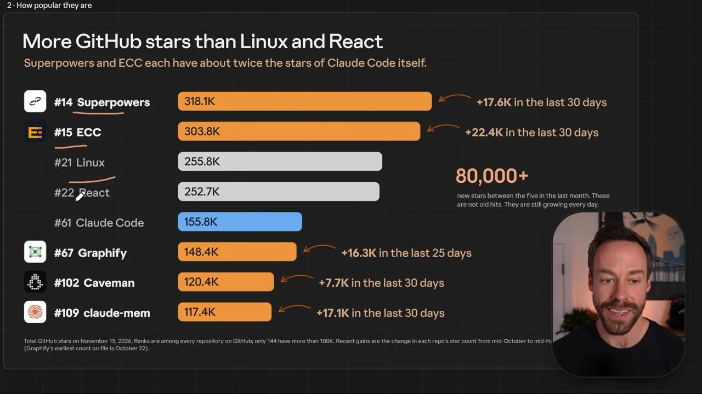
각자 잘한다고 주장하는 일로 시험했어요
시험은 플러그인마다 자기가 잘한다고 내세우는 일로 골랐어요. 카드 위 칸이 코딩 과제 세 개, 아래 칸이 Q&A, 큰 코드베이스, 메모리 시험이에요. 카드마다 붙은 아이콘이 그 시험을 치른 플러그인이고, 카드 아래 작은 글씨에 숨은 테스트 수와 실행 횟수가 있어요.
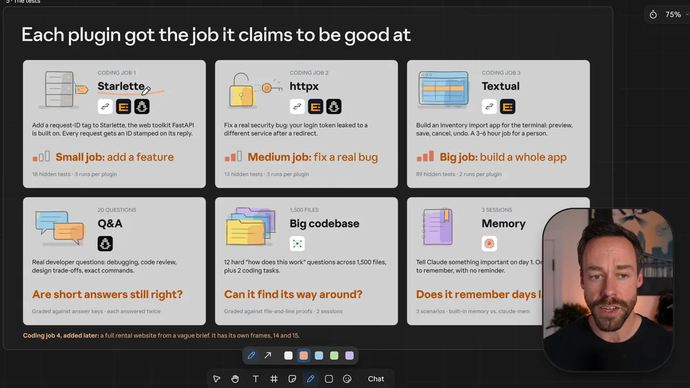
| 시험 | 내용 | 대상 | 채점 |
|---|---|---|---|
| 코딩 과제 1 (작은 일) | Starlette에 요청마다 요청 ID(Identifier)를 붙이는 기능 추가 | Superpowers, ECC, Caveman | 숨은 테스트 18개 · 3번 실행 |
| 코딩 과제 2 (중간) | httpx 보안 버그 수정: 리다이렉트 뒤 로그인 토큰이 다른 서비스로 샘 | Superpowers, ECC, Caveman | 숨은 테스트 13개 · 3번 실행 |
| 코딩 과제 3 (큰 일) | Textual로 터미널 재고 가져오기 앱 만들기 (사람이면 3~6시간) | Superpowers, ECC | 숨은 테스트 89개 · 2번 실행 |
| Q&A | 디버깅, 코드 리뷰, 설계 트레이드오프 질문 20개, 각 두 번 | Caveman | 미리 쓴 답안 기준 |
| 큰 코드베이스 | 파일 1,500개에서 동작 원리 질문 12개 + 코딩 과제 2개 | Graphify | 근거 파일·줄 기준 · 2세션 |
| 메모리 | 첫날 알려 준 규칙을 사흘째 다시 말하지 않고도 기억하나 | claude-mem | 시나리오 3개 |
코딩 과제는 모두 숨은 테스트와 블라인드 채점으로 평가했어요. 표의 대상은 카드에 붙은 아이콘 기준이에요. Caveman은 코딩 과제 1, 2도 함께 돌렸어요.
Superpowers: 같은 코드에 비용은 두 배
Superpowers는 코딩 에이전트에 소프트웨어 개발 방법론을 통째로 얹어요. 왼쪽 노란 카드의 주장처럼 Claude를 시니어 엔지니어처럼 일하게 하는 게 목표예요. 먼저 브레인스토밍하고, 계획을 쓰고, 그다음 만들어요. 발표자는 이걸 'Anthropic보다 Claude Code를 더 잘 쓰는 법을 안다'는 말로 읽어요. 6개월 전엔 그랬을 수 있어도 지금은 아니라고 봐요. 질문하고 브레인스토밍하는 단계가 모두 비용과 시간으로 돌아오기 때문이에요.
오른쪽 막대에서 파란색이 기본, 주황색이 Superpowers예요. 과제 1은 $0.55·4분 대 $1.61·11.5분으로, 세 배 비싸고 세 배 느렸어요. 과제 2는 $0.32·7.6분 대 $0.37·5.1분으로 조금 비싸지만 2.5분 빨랐어요. 다섯 플러그인을 통틀어 몇 안 되는 이긴 지점이에요. 과제 3은 다시 $0.91·4.7분 대 $2.33·14.5분이에요. 아래 분홍 카드가 결론이에요. 과제 1~3은 둘 다 8번 빌드를 모두 통과했고, 비용은 123% 더 들었어요.
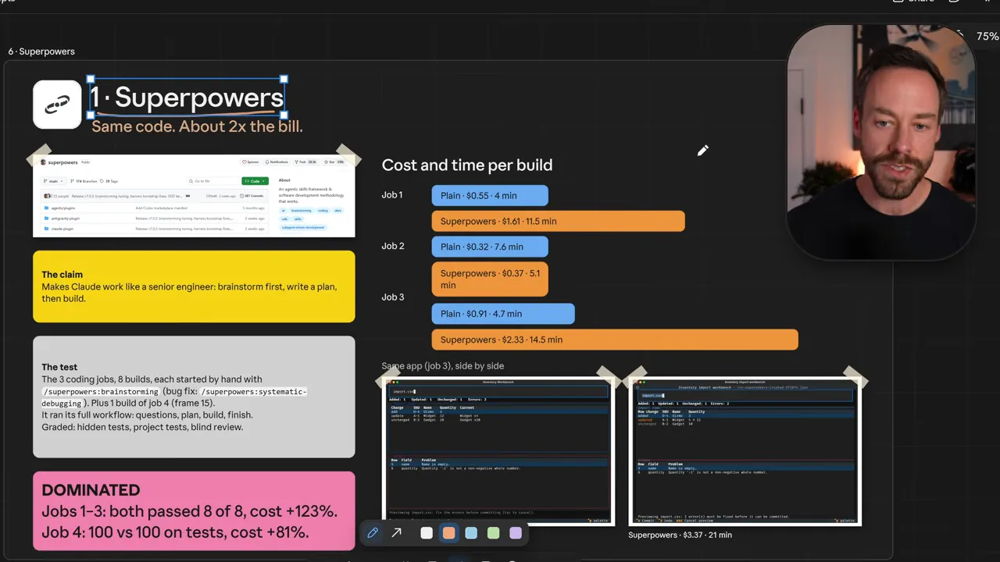
웹사이트 과제에서는 차이도 보였어요
막연한 요구만 주고 숙박 예약 사이트를 만들게 한 과제 4에서도 숫자는 비슷했어요. 기본은 $2.84·14분, Superpowers는 $5.15·26분, ECC는 $8.66·39분이었어요. 세 사이트는 위 사진처럼 거의 똑같이 생겼고, 숨은 테스트 점수도 100, 100, 99.4로 비슷했어요.
그런데 막대 아래 작은 표를 보면 플러그인 쪽이 나은 점도 있어요. 기본은 먼저 묻지 않고 만든 뒤 고쳤고, 처음엔 고객 요구를 63%만 맞추다가 나중에 100%가 됐어요. 두 플러그인은 먼저 질문을 해서 처음부터 100%였어요. 코드 리뷰 점수도 기본 3.25(테스트 없음), Superpowers 4, ECC 4.25였어요. 발표자는 결과물이 거의 같다는 데 무게를 두지만, 요구가 막연한 일이라면 이 차이도 같이 따져 볼 만해요.
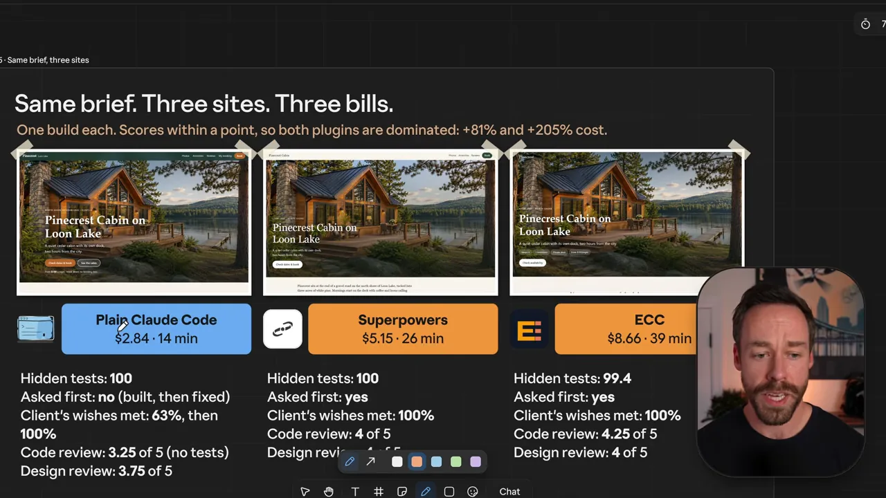
Caveman: 한 문장이 이겼어요
Caveman은 Claude가 원시인처럼 짧게 말하게 해서 토큰을 아끼는 플러그인이에요. README 맨 위에는 큰 숫자 네 개가 걸려 있어요. 입력 토큰 33.2% 감소, 54% 저렴, 한 번의 테스트 실행에 397 → 76 토큰, 그리고 원시인 말투 출력으로 1.4~2.4배 저렴이에요. 겉으로만 보면 효과가 아주 커 보여요.
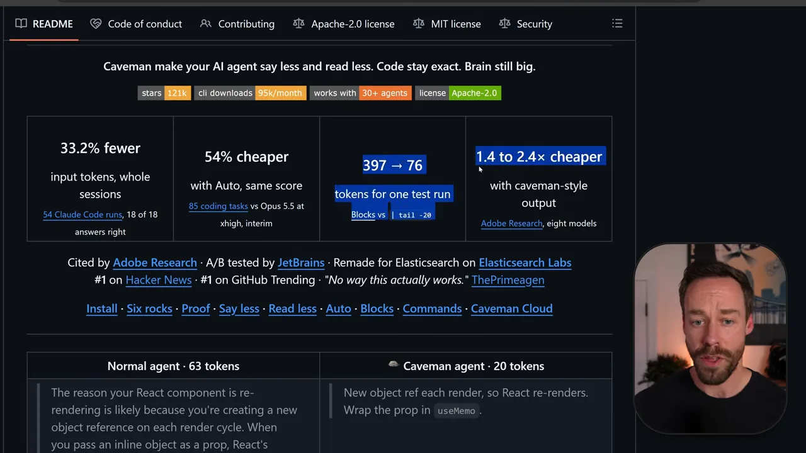
시험에서는 셋을 비교했어요. 기본 Claude Code, Caveman, 그리고 CLAUDE.md에 "Answer concisely" 한 줄만 적은 기본 Claude Code예요. 개발 질문 20개에 각각 두 번 답하게 했고, 코딩 과제 1, 2도 돌렸어요. 오른쪽 막대를 보면 주황색 Caveman이 가장 길어요. 왼쪽 아래 분홍 카드도 'COSTS MORE'라고 적고 있어요.

| 기본 | Caveman | "Answer concisely" 한 줄 | |
|---|---|---|---|
| 답 하나당 비용 | $0.152 | $0.162 (+8%) | $0.113 (−23%) |
| 답변 점수 | 94.3 | 94.1 | 90.1 |
| 쓴 단어 수 | 3,057 | 2,858 (−5%) | 1,861 (−36%) |
| 코딩 과제 비용 | — | +2% | 시험 안 함 |
Caveman이 단어를 5%밖에 줄이지 못한 게 핵심이에요. 짧게 말하라는 스킬 지시문을 매번 불러오는 비용이 아낀 단어보다 컸어요. 보드 아래 회색 메모는 코딩에서 덜 아끼는 이유도 적어 둬요. 코딩 비용 대부분은 Claude가 말하는 데가 아니라 코드를 읽는 데 들어요. 한 줄 지시는 점수가 4점쯤 낮았지만, 단어를 36% 줄이고 비용을 23% 낮췄어요.
Graphify: 지도를 샀는데 더 많이 읽어요
Graphify는 코드베이스를 훑어 지식 그래프로 바꾸는 도구예요. Claude에게 코드베이스 지도를 쥐여 주니, 큰 코드베이스에 대한 질문에 더 빨리 정확하게 답한다는 게 기대 효과예요. 발표자도 예전에 이걸로 영상을 만들 만큼 좋아했어요. 아래 README 첫 줄에 굵게 'Cut agent token spend by 80%'가 있어요. 바로 위 배지에는 Y Combinator S26도 보여요. 발표자는 그날 GitHub 트렌딩 2위였던 레포라고 소개해요.
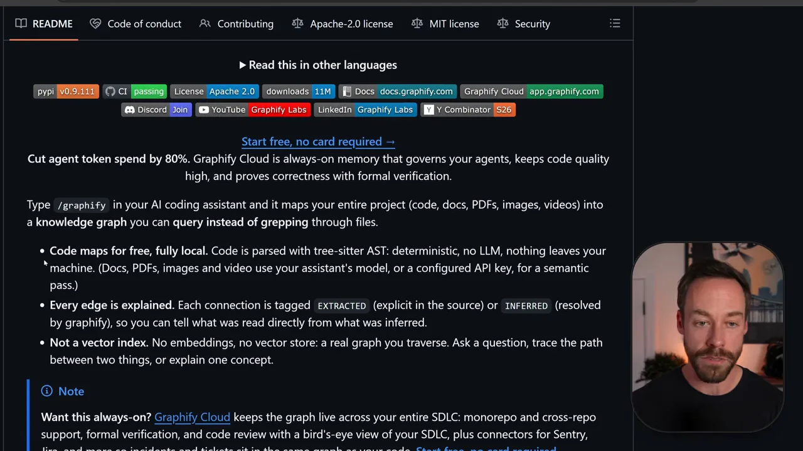
시험은 Textual 저장소(파일 1,500개)를 쓴 긴 세션 하나였어요. 어려운 질문 12개와 코딩 과제 2개를 두 번씩 돌렸어요. Graphify는 먼저 src/의 지도를 만들었어요. 채점은 사실마다 근거가 되는 파일과 줄을 정해 둔 답안으로 했고, 블라인드로 했어요.
오른쪽 막대 네 쌍이 결과예요. 위에서부터 질문당 읽은 토큰은 258K 대 288K(+12%), 답변 점수는 93.0 대 89.1, 세션당 비용은 $4.63 대 $5.74(+24%), 질문 12개에 걸린 시간은 12.7분 대 16.5분(+30%)이에요. 지도를 만들었는데 오히려 더 많이 읽었어요.
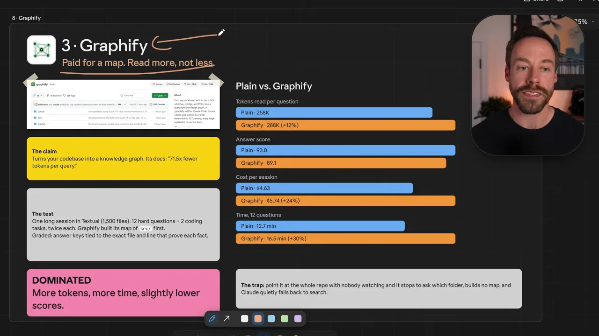
오른쪽 아래 회색 메모 'The trap'도 읽어 둘 만해요. 저장소 전체를 맡기고 지켜보지 않으면 Graphify는 어느 폴더를 할지 묻고 멈춰요. 그러면 지도는 만들어지지 않고 Claude는 조용히 평소 검색으로 돌아가요. 발표자는 '잘못 썼다, 특정 코드베이스에서만 된다'는 반론이 나올 걸 알아요. 그래도 그냥 쓴 기본 Claude Code가 더 빠르고 정확하고 싸다면 80% 같은 주장은 무슨 의미냐고 되물어요.
claude-mem: Claude Code는 이미 기억해요
발표자는 Claude 메모리 계열 플러그인을 가장 의미 없는 분야로 꼽아요. 자주 다루는 Obsidian도 Claude가 더 잘 기억하게 해 주는 건 아주 조금뿐이라고 말해요. 그보다는 사람이 많은 파일을 둘러보기 편하게 해 주는 도구라는 거예요. 그런데도 매일 'Claude에게 기억을 붙여 준다'는 새 플러그인이 나와요. claude-mem도 그중 하나예요. 아래 README 문구가 그 주장이에요. 오른쪽 배지는 GitHub 오늘의 레포 1위, 전체 순위 109위예요.
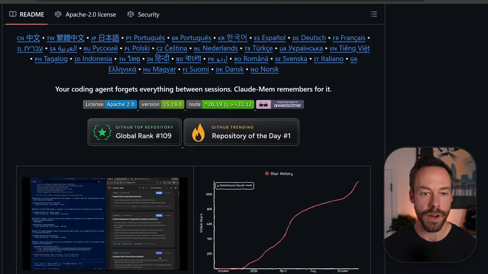
발표자는 바로 그 전제가 틀렸다고 봐요. Claude Code에는 손댈 필요 없는 자동 메모리가 이미 있어요. 시험은 시나리오 3개를 세션 3개에 걸쳐 돌렸어요. 첫날 규칙을 하나 알려 주고, 사흘째에 다시 일러 주지 않은 채 그 규칙이 필요한 일을 맡겼어요. 비교 대상은 자동 메모리만 쓰는 기본 Claude Code와, 거기에 claude-mem을 더한 쪽이에요.
오른쪽 막대 세 쌍이 기억 점수예요(1.00이면 다 기억). 고객과의 약속은 1.00 대 1.00, 바뀐 결정은 0.75 대 0.75, 로컬 우회책은 1.00 대 1.00으로 완전히 같아요. 막대 아래 작은 글씨에는 메모리를 끄면 0.83·0.50·0.86으로 떨어진다고 적혀 있어요. 그러니 이 시험은 실제로 기억력을 재고 있어요. 가운데 아래 터미널 화면은 Claude Code가 스스로 써 둔 메모예요.
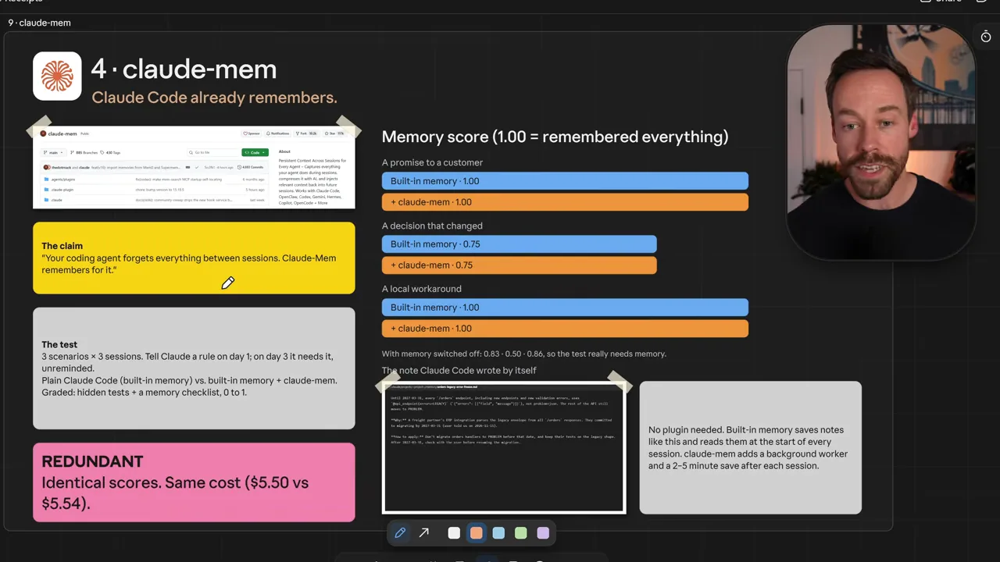
오른쪽 아래 회색 메모가 차이를 정리해요. 기본 메모리는 이런 노트를 저장해 두고 세션을 시작할 때마다 읽어요. claude-mem은 여기에 백그라운드 작업자를 하나 더 띄우고, 세션이 끝날 때마다 2~5분 걸리는 저장 과정을 더해요. 같은 점수를 내려고 일을 더 하는 셈이라, 발표자는 이걸 '생산성 연극'이라고 불러요.
ECC: 비용 다섯 배, 시작부터 무거운 컨텍스트
ECC는 스스로를 'AI(Artificial Intelligence) 에이전트 하네스의 성능 최적화 시스템'이라고 소개해요. 발표자는 'AI 에이전트 하네스의 운영체제'라고 부르고, GitHub 오늘의 레포 1위, 전체 15위였다고 말해요. 아래 README 표가 담긴 내용이에요. 에이전트 72개, 스킬 327개, 레거시 명령 98개에 훅, 규칙, 메모리, 보안 검사까지 들어 있어요.
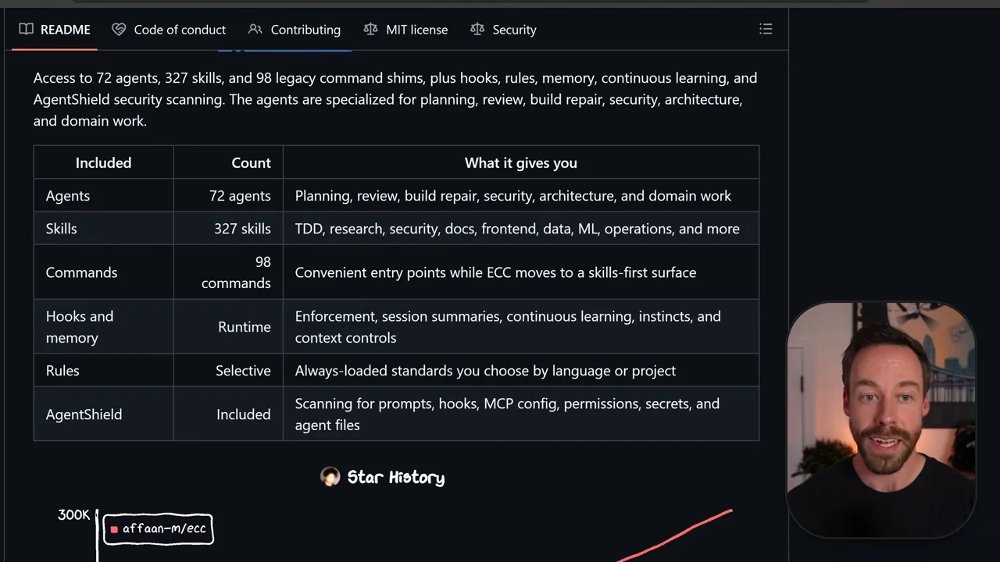
시험은 Superpowers와 같은 코딩 과제 세 개였고, ECC 자체의 /ecc:plan, 테스트 우선 흐름, /code-review를 써서 돌렸어요. 오른쪽 막대에서 과제 1은 기본 $0.55·4분 대 ECC $2.93·13.7분이에요. 과제 2는 $0.32·7.6분 대 $1.22·6.5분으로, 1분 빠르지만 네 배 가까이 비싸요. Superpowers 때와 같은 모양이에요. 과제 3은 $0.91·4.7분 대 $5.12·28.7분으로 가장 큰 차이가 났어요. 영상 첫머리의 '다섯 배'가 이 숫자예요. 분홍 카드대로 과제 1~3은 둘 다 모두 통과했고, 비용은 397% 더 들었어요.
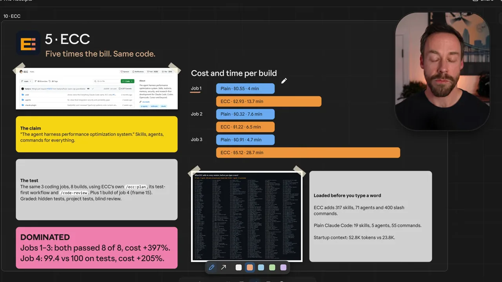
말을 걸기도 전에 늘어나는 컨텍스트
오른쪽 아래 회색 메모 'Loaded before you type a word'는 ECC를 켜기만 해도 붙는 짐이에요. ECC는 스킬 317개, 에이전트 71개, 슬래시 명령 400개를 더해요. 기본 Claude Code는 스킬 19개, 에이전트 5개, 명령 55개예요. 그래서 시작 컨텍스트가 23.8K 토큰에서 52.8K 토큰으로 늘어요. 아래 그림은 그 두 숫자를 같은 눈금으로 그린 거예요.
왜 이런 일이 생기고, 무엇을 해야 하나
그렇게 인기 있는 플러그인들이 왜 이런 숫자를 낼까요? 발표자의 답은 모델이 너무 좋아졌다는 거예요. 이제 Sonnet 3.5나 Opus 4를 쓰는 시절이 아니에요. 발표자는 Opus 4.6 즈음부터 모델에 덧붙인 스캐폴딩, 지침, 할 일을 하나하나 정해 주는 프롬프트가 필요 없어졌다고 봐요. 모델이 플러그인보다 똑똑하니, 군더더기와 안전장치를 얹으면 오히려 성능이 떨어진다는 거예요.
근거로는 Anthropic 쪽 발언을 들어요. Boris Cherny가 스킬과 CLAUDE.md를 지우라고 말하는 영상이 여럿 나왔고, 아래 화면의 Lydia Hallie 발표 'Rethinking Claude Code Best Practices'도 같은 이야기를 해요. 지금의 모범 사례는 6개월 전과 다르고, 많은 스킬과 플러그인이 그 변화를 따라가지 못했다는 거예요.
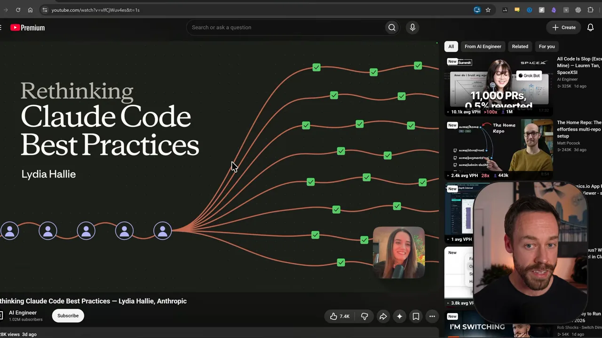
그래서 결론은 '구조를 더 적게'예요. 아래 화면처럼 CLAUDE.md, 스킬, 플러그인을 과감하게 쳐내라고 해요. 세 줄 중 plugins 막대가 가장 길게 그려져 있어요. 발표자는 이걸 안 하면 Claude Code를 스스로 더 나쁘게 만드는 거라고 말해요.
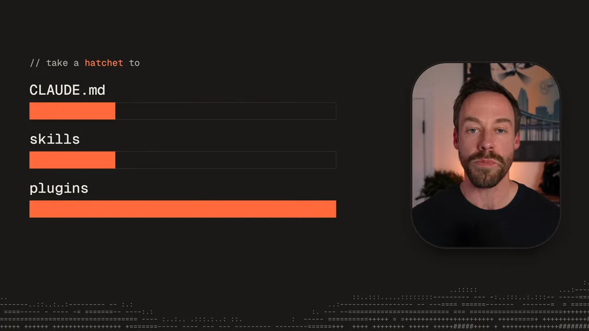
대신 할 일 세 가지
아래 보드가 발표자가 권하는 순서예요. 왼쪽부터 감사(Audit), 까다롭게 고르기(Be picky), 믿기 전에 시험(Test before you trust)이에요. 아래 노란 띠에는 Lydia Hallie 발표에서 가져온 말이 있어요. 지난 한 해 동안 설정에 더한 것 중 상당수가 이제 오히려 발목을 잡는다는 내용이에요.
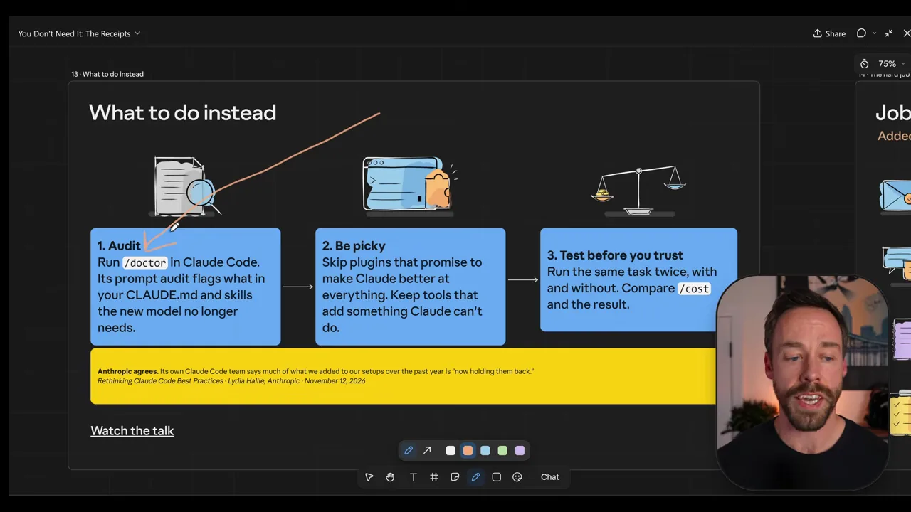
- 감사해요 — Claude Code에 들어 있는
/doctor를 돌려요. 발표자는 이 명령이 CLAUDE.md와 스킬을 보고 지금 모델에 맞지 않는 걸 지우자고 제안한다고 설명해요. 더 나아가 자연어로 직접 시켜도 돼요. 아래 프롬프트처럼요. - 까다롭게 골라요 — 'Claude Code는 좋지만 내가 더 낫게 만드는 법을 찾았다'는 식의 플러그인은 경계해요. 하루 종일 이것만 만드는 Anthropic 사람들이 못 찾은 걸 찾았다는 주장이니까요. Claude가 못 하는 걸 더해 주는 도구만 남겨요.
- 믿기 전에 시험해요 — 무거운 플러그인을 들일 거라면 이 영상처럼 같은 일을 플러그인 있이 없이 두 번 돌려,
/cost로 비용과 속도와 결과를 비교해요. 발표자는 GitHub 레포의 숫자를 그대로 믿지 말라고 해요. 들여다보면 Haiku로 쟀거나, 6개월 전에 재고 고치지 않았거나, 아주 좁은 경우만 잰 경우가 많다고 해요.
아래가 발표자가 보여 준 감사용 프롬프트예요. 먼저 지난 3개월 동안 안 쓴 스킬과 플러그인을 골라 바로 지우고, 그다음 쓰던 것들도 하나하나 아직 말이 되는지 따져 보게 해요. 화면 아래 'most of them don't'는 발표자의 예상이에요. 쓰던 것도 대부분 말이 안 될 거라는 뜻이에요.

마지막으로 발표자는 이 영상이 특정 플러그인을 깎아내리려는 게 아니라고 덧붙여요. 본인도 여러 프로젝트에서 다섯 개를 다 써 봤고, 오랫동안 좋은 일을 해 온 도구들이에요. 문제는 모델이 바뀌는 만큼 설정도 바뀌어야 한다는 거예요. 대부분 오픈소스라 새 모델에 맞게 고쳐 쓸 수도 있어요. 3개월 전에 통했던 게 지금도 통한다고 가정하지 말라는 게 마지막 당부예요. 결국 버려지는 건 내 사용량과 내 시간이니까요.